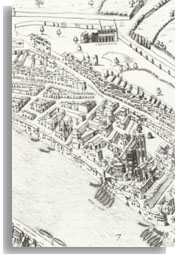

Lie's Løvens hjerte is based on "reliable and unreliable historical sources." The text opens with a comparison of the way Lyon looks in a map from the 1500s and the way it looks today.

Map of Lyon, 1550
From Louis Bourgeois' Louise Labé et les poètes lyonnais de son temps. Lyon: Éditions Lyonnaises d'Art et d'Histoire. 1994. Page 84. |
| Historical texts used in postmodern ways |
Many of the fictional characters in the book bear the names of historical figures:
Antonia Antonia Rollette (or Rossette), Louise's cousin, appears in court documents.
Clémence Louise dedicated her Oeuvres to Clémence de Bourges, a Lyon noblewoman.
Clément Clément Marot introduced the sonnet to French literature in the mid 1530s.
Ennemond Ennemond Perrin, a ropemaker, married Louise in 1542.
François François Labé was Louise's brother.
Henry Henry II of France who made his official entry into Lyon in 1548.
Joachim Joachim du Bellay published Deffence et illustration de la langue françoyse in 1549.
Louise Louise Labé published Oeuvres in Lyon in 1555.
Maurice Maurice Scève published Délie in 1544.
Pernette Pernette du Guillet published Les rymes in Lyon in 1545.
Pierre Pierre Charley, known as Pierre Labé, was Louise's father.
Pontus Pontus de Tyard published Erreurs amoreuses in 1549.
Thomas Thomas Fortini witnessed Louise's will.
Yvard Jean Varoz (or Yvard) sought to seperate from his wife, Antonia, in Geneva in 1552.
Lie's novel is a historiographic study of women. She looks at the way the whole person of Louise Labé has been preserved in texts and introduces a Norwegian audience to more of Labé's texts by including Norwegian translations of some of the sonnets and elegies. Labé's sonnets were particularly noteworthy because the sonnet tradition had excluded women, centering instead on the suffering male lover and the absent female object of his desire. Labé shocked audiences by reversing gender roles, creating female subjects that voiced their sexuality openly. Lie takes up these issues, creating a dialogue between past and present, between Renaissance and contemporary texts, expanding the conversation to a metafictive level to question ontological issues in female erotic desire and corporeality, and narrative control.
|
Rabelais, François Gargantua and Pantagruel
Nash, Jerry The Love Aesthetics of Maurice Scève : Poetry and Struggle
Scève, Maurice The Entry of Henri II into Lyon : September 1548
Katz, Richard The Ordered Text : The Sonnet Sequences of Du Bellay
|